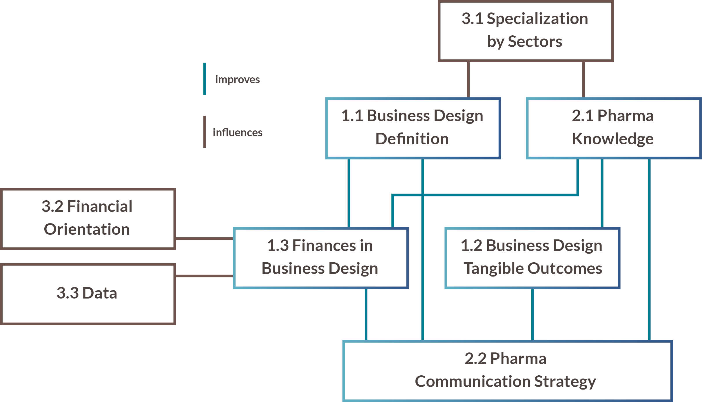
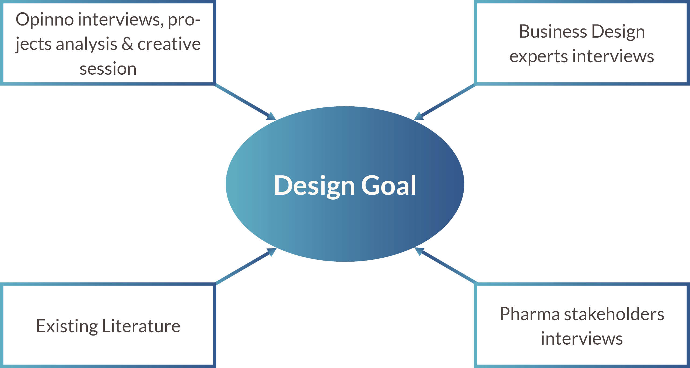
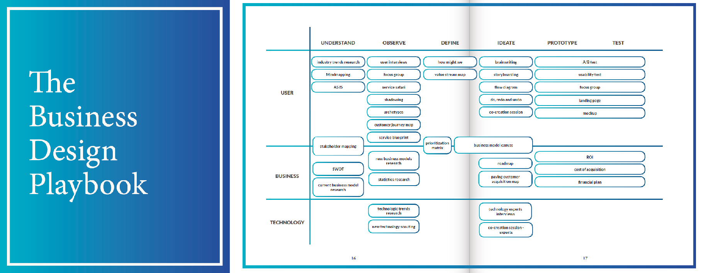
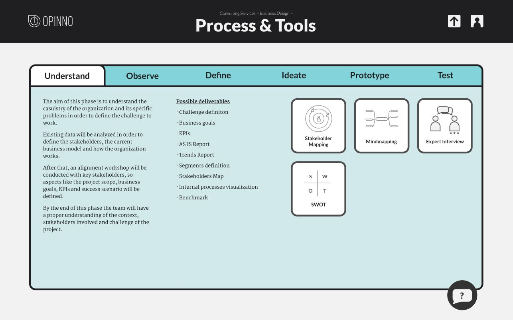

Digital Knowledge Platform
a digital knowledge platform and strategy to improve Opinno’s Business Design position in the Spanish Pharma market.
2020
Opinno
5 months
individual project
Brief
Detect an opportunity and improve the Business Design department of Opinno, in order to become Spain's market leaders in Pharma innovation consulting.
Responsibilities
This project was done individually, so on one hand, I planned the whole project, managed stakeholders, conducted research and analyzed the data; on the other hand, I conducted a co-creation session, created a design goal, proposed a concept and developed a prototype.
Opinno Barcelona is focusing on Pharma clients, and because of that they are facing a new range of challenges, such as regulations and compliance barriers. The solutions proposed aim to create internal alignment in terms of Business Design methodology as well as to keep and access the knowledge gained easily, in order to maintain and improve their expertise.
Process
The Double Diamond process model was used to structure the project, since it helps to approach problems in an analytical and creative way. The aim is to narrow the project scope only when many possibilities have been studied. By following this approach the project is always open to different directions before delivering a solution.

During the research diamond, I worked to define the challenge. In order to do so, I conducted internal and external interviews, targetting Business Design consultants and Pharma experts, as well as analyzing internal projects. This let me understand the internal situation at Opinno and the external context in Pharma. Following this, all the findings were analyzed and the department needs were defined and prioritized.

Once I moved to the design diamond, I planned and facilitated a creative session with several stakeholders in order to create the design requirements and the design goal. Due to COVID-19 restrictions, this session was conducted digitally via Miro.

A methodology playbook was created and an interactive prototype (Figma) of a digital knowledge platform was designed and iterated upon based on feedback from Opinno consultants. Then, it was validated in regard to desirability, feasibility and viability.
Results
Research showed that the Business Design department of Opinno was facing multiple problems, but the 2 most relevant were the following: they were missing internal alignment in terms of methodology and definitions, and they lacked a knowledge transfer strategy, so they felt they were not working as efficient as they should. Therefore, the project resulted in multiple deliverables.
Firstly, a Business Design Playbook was created, nurtured by the state of the art of the discipline and the insights from the interviews with Business Design experts from Singapore, Finland and Germany. This Playbook explained the definitions inside Business Design, the process to follow, what are the tools needed and when & how to use them. Its main aim was to set the foundations of the department, so the whole team could follow a strategy.

In order to improve the way the department managed Pharma knowledge, a Knowledge Management Strategy was created and a Digital Platform was conceptualized and prototyped. Both were scalable to other departments, and they proposed a systematic way to capture, preserve, organize and access knowledge.

This way, Opinno consultants will work more efficiently, they won't be afraid of losing information when a employee quits and will improve their communication, both in meetings with clients and in sales pitches.